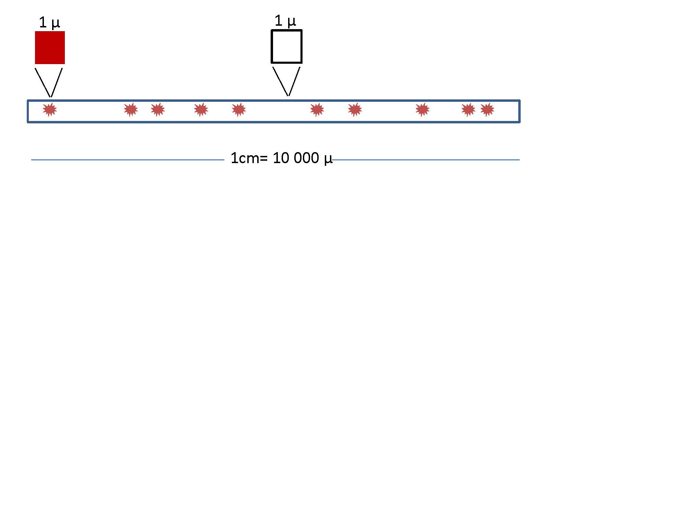

Chapter 8 Poisson and Exponential Models
8.2 Discrete probability models
We are building up more complex models from simple ones:
Uniform: Classical interpretation of probability \(\downarrow\) Bernoulli: Introduction of a parameter \(p\) (family of models) \(\downarrow\) Binomial: Repetition of a random experiment (\(n\)-times Bernoulli trials) \(\downarrow\) Poisson: Repetition of random experiment within a continuous interval, having no control on when/where the Bernouilli trial occurs.
8.3 Counting events
Imagine that we are observing events that depend on time or distance intervals.
- cars arriving at a traffic light
- getting messages on your mobile phone
- impurities occurring at random in a copper wire
Suppose that the events are outcomes of independent Bernoulli trials each appearing randomly on a continuous interval, and we want to count them.
8.4 Counting events
What is the probability of observing \(X\) events in an interval’s unit (time or distance)?
Imagine that some impurities in a copper wire deposit randomly along a wire
- at each centimeter, you would count an average of \(\lambda=10/cm\).
- divide the centimeter into micrometers (\(0.0001cm\))
8.5 Poisson distribution
micrometers are small enough so
- either there is or there is not an impurity in each micrometer
- each micrometer can be considered a Bernoulli trial

8.6 Poisson distribution
The probability of observing \(X\) impurities in \(n=10,000\mu\) (1cm) approximately follows a binomial distribution
\(P(X=x)=\binom n x p^x(1-p)^{n-x}\)
where \(p\) is the probability of finding an impurity in a micrometer.
Remember that \(E(X)=np\) so for \(\lambda=np\) (average number of impurities per 1cm), we can write
\[P(X=x)=\binom n x \big(\frac{\lambda}{n}\big)^x(1-\frac{\lambda}{n})^{n-x}\]
- There could still be two impurities in a micrometer so we need to increase the partition of the wire and \(n \rightarrow \infty\).
Then in the limit:
\[P(X=x)= \frac{e^{-\lambda}\lambda^x}{x!}\]
Where \(\lambda\) is constant because it is the density of impurities per centimeter, a physical property of the system.
8.7 Poisson distribution: Derivation details
For \(P(X=x)=\binom n x \big(\frac{\lambda}{n}\big)^x(1-\frac{\lambda}{n})^{n-x}\)
in the limit (\(n \rightarrow \infty\))
- \(\frac{1}{n^x}\binom n x =\frac{1}{n^x}\frac{n!}{x! (n-x)!}=\frac{(n-x)!(n-x+1)...(n-1)n}{n^x x! (n-x)!}=\frac{n(n-1)..(n-x+1)}{n^x x!} \rightarrow \frac{1}{x!}\)
- \((1-\frac{\lambda}{n})^{n} \rightarrow e^{-\lambda}\) (definition of exponential)
- \((1-\frac{\lambda}{n})^{-x} \rightarrow 1\)
Therefore \(P(X=x)= \frac{e^{-\lambda}\lambda^x}{x!}\)
8.8 Poisson distribution
Definition
Given
- an interval in the real numbers
- counts occur at random in the interval
- the average number of counts on the interval is known (\(\lambda\))
- if one can find a small regular partition of the interval such that each of them can be considered Bernoulli trials
Then…
8.9 Poisson distribution
Definition
The random variable \(X\) that counts events across the interval is a Poisson variable with probability mass function
\[f(x)= \frac{e^{-\lambda}\lambda^x}{x!}, \lambda>0\]
Properties:
- mean \(E(X)= \lambda\)
- variance \(V(X)= \lambda\)
8.10 Poisson distribution
With the Poisson probability function:
\[f(x)= \frac{e^{-\lambda}\lambda^x}{x!}\] for \(x \in \{0, 1, ...\}\)
We can now answer questions like:
- What is the probability of receiving 4 emails in an hour, when the average number of emails in one hour is \(1\)?
\(f(4; \lambda=1)=0.18\)
in R dpois(2,1)
- What is the probability of counting at least \(10\) cars arriving at a road toll in a minute, when the average number of cars that arrive at the toll in a minute is \(5\); \(P(X \leq 10)=F(10; \lambda=5)=0.98\)?
in R ppois(10,5)

8.12 Continuous probability models
Continuous probability models are probability density functions \(f(x)\) of a continuous random variables that we believe describe real random experiments.
Definition:
Positive:
- \(f(x) \geq 0\)
Allows us to compute probabilities using the area under the curve:
- \(P(a\leq X \leq b)=\int_{a}^{b} f(x) dx\)
The probability of any value is \(1\):
- \(\int_{-\infty}^{\infty} f(x) dx = 1\)
8.13 Exponential density
Let’s go back to the Poisson probability for the number of events (\(k\)) in an interval
\[f(k)=\frac{e^{-\lambda}\lambda^k}{k!}, \lambda>0\]
Let’s now consider only the first event
the distance/time we have to wait until the fisrt event is a continuous random variable.
We can ask for the probability that the first event is at distance \(X\).
8.14 Exponential density
The probability of observing \(0\) events if an interval has unit \(x\) is
\[f(0|x)=\frac{e^{-x\lambda}x\lambda^0}{0!}\]
or
\[f(0|x)=e^{-x\lambda}\]
We can treat this as the conditional probability of \(0\) events in a distance \(x\): \(f(K=0|X=x)\) and apply the Bayes theorem to reverse it:
\[f(x|0)=C f(0|x)=C e^{-x\lambda}\]
So we can calculate the probability of observing a distance \(x\) with \(0\) events (this is the distance until the first event or the distance between any two events).
8.15 Exponential density
In a Poisson process with parameter \(\lambda\) the probability of waiting a distance/time \(X\) until the first event has a probability density
\[f(x)= C e^{-x\lambda}\]
\(C\) is a constant that ensures: \(\int_{-\infty}^{\infty} f(x) dx =1\)
by integration \(C=\lambda\)
Therefore
\[f(x)=\lambda e^{-\lambda x}\]
8.16 Exponential density
An exponential random variable \(X\) has a probability density
\[f(x)=\lambda e^{-\lambda x}, x\geq 0\]
Properties:
- Mean: \(E(X)=\frac{1}{\lambda}\)
- Variance: \(V(Y)=\frac{1}{\lambda^2}\)
Where \(\lambda\) is its single parameter, known as a decay rate.
Note: The exponential model is a general model. It can describe the time/length until the first count in a Poisson process of the size of a whole made by a drill.
8.18 Exponential Distribution
In a Poisson process: ¿What is the probability of observing distance smaller than \(a\) until the first event?
Remember that this probability \(F(a)=P(X \leq a)\) is the probability density
\[F(a)=\lambda \int_\infty^a e^{-x\lambda}dx=1-e^{-a\lambda}\]
- ¿What is the probability of observing a distance larger than \(a\) until the first event?
\[P(X > a)=1- P(X \leq a)= 1- F(a) = e^{-a\lambda}\]
8.19 Exponential Distribution
With the exponential density function:
\[f(x)=\lambda e^{-\lambda x}\]
We can answer questions like:
- What is the probability that we have to wait for a bus for more than \(1\) hour when on average there are two buses per hour?
\[P(X > 1)=1-P(X \le 1) = 1-F(1,\lambda=2)=0.1353\]
in R 1-pexp(1,2)
- What is the probability of having to wait less than \(2\) seconds to detect one particle when the radioactive decay rate is \(2\) particles each second; \(F(2,\lambda=2)\)
\[P(X \le 2)=F(2,\lambda=2)=0.981\]
in R pexp(2,2)